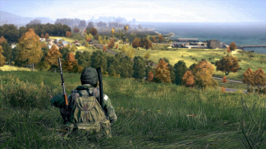

Bem-vindo ao DayZ Wiki 🧟
Esta é a sua história. Aqui você encontrará a fonte mais completa de informações sobre DayZ, incluindo o título DayZ, best-seller da Bohemia Interactive, e o clássico Arma 2 DayZ Mod, que deu início a tudo.
Introdução a História 📚
DayZ Standalone se passa na província nordeste do sul de Zagoria , em uma ex-república soviética chamada Chernarus . Geograficamente, Chernarus está espremida entre a Federação Russa ao norte das Montanhas Negras e o Taquistão a oeste do rio Svetlaya. A localização exata de Chernarus é desconhecida, mas pode-se supor que ocorra em algum lugar do Cáucaso com base nas imagens de satélite do trailer de lançamento do ARMA 2. A tradição de DayZ é definida em uma linha do tempo alternativa do ARMA Universe (oficialmente intitulada como Armaverse Timeline ). Isso é evidente por uma variedade de referências no jogo encontradas em Chernarus. A referência mais notável é o anúnciooutdoors , com pelo menos.. saber mais
Noticias📰
A atualização 1.21 já está disponível!A atualização 1.21 está disponível para PC/Xbox Experimental! DayZ em 2023 - A atualização de estabilidade 1.20 da atualização do desenvolvedor já está disponível!
